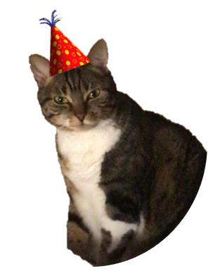

Feliz aniversário, Lice!

O ano era 1996. Um belo domingo no Rio de Janeiro, começo de outono e do signo de Áries. Eis que vinha ao mundo uma bebê chamada Alice.
Mal sabiam os cariocas que esse aparentemente pacato 24 de março marcava o começo da existência dessa mulher.
No dia 24 de março de 2022, Alice completou 26 aninhos. Uma data tão especial tem que ser comemorada! Viva Alice! 🎂🥳
26 aninhos de existência desbravando esse mundão, pra se tornar essa mulher incrível que você é hoje. O boy, a Brigitte e os doguinhos se uniram aqui pra te dar parabéns! ❤️